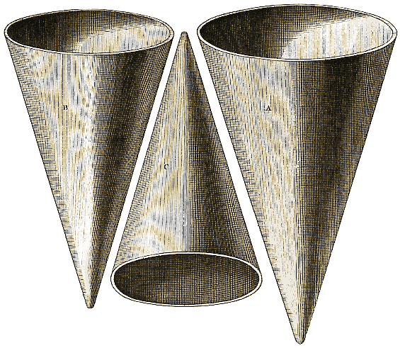
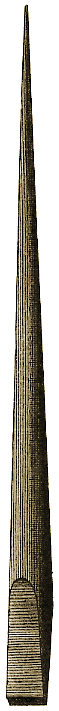

Planche XIII.
Figures
A, B, C, D, E, F, G, 106, 107, 108.
Planche : précédente - suivante.

Figure A, B, C. - 127, 1146.

Figure D, E, F, G. - 127, 1146.
|  | |
Figure 108. - 132.
A, B, C, D, E, F, G, 106, 107, 108.
Planche : précédente - suivante.